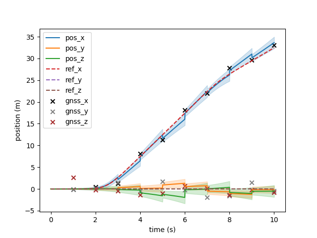
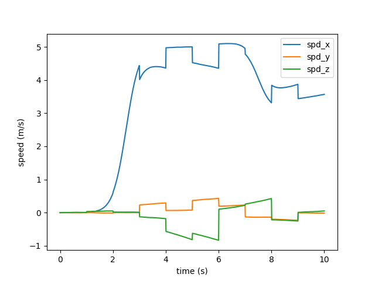
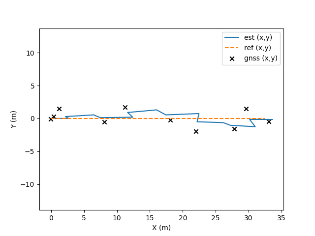
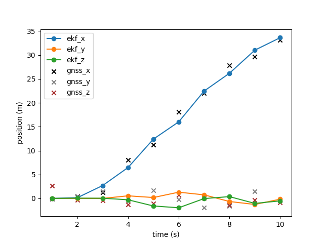
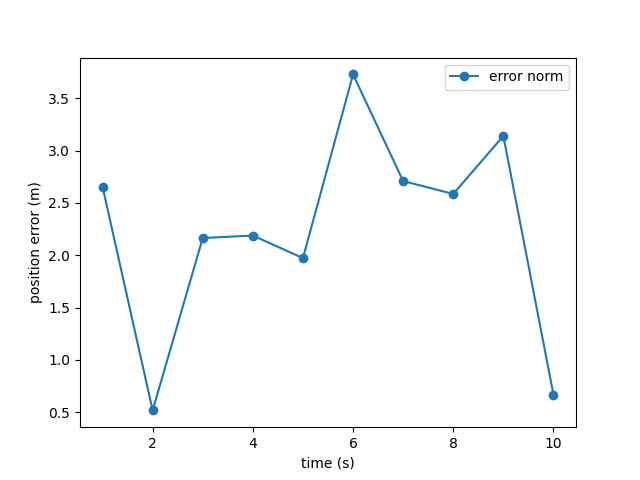

| Index | Name | Value |
|---|---|---|
| 0 | pos_x | 33.625191 |
| 1 | pos_y | -0.158683 |
| 2 | pos_z | -0.510199 |
| 3 | spd_x | 3.567434 |
| 4 | spd_y | -0.014172 |
| 5 | spd_z | 0.050296 |
| 6 | accel_bias_x | 0.025966 |
| 7 | accel_bias_y | 0.000369 |
| 8 | accel_bias_z | 0.017752 |
| 9 | w_bias_x | -0.001066 |
| 10 | w_bias_y | -0.000078 |
| 11 | w_bias_z | 0.001858 |
| 12 | psi | 0.003131 |
| 13 | theta | -0.018374 |
| 14 | gamma | 0.005802 |
| Index | Time (s) | X (m) | Y (m) | Z (m) |
|---|---|---|---|---|
| 0 | 1.000 | -0.102 | -0.107 | 2.655 |
| 1 | 2.000 | 0.411 | 0.279 | -0.277 |
| 2 | 3.000 | 1.227 | 1.515 | -0.446 |
| 3 | 4.000 | 8.076 | -0.505 | -1.319 |
| 4 | 5.000 | 11.246 | 1.695 | -1.054 |
| 5 | 6.000 | 18.110 | -0.229 | 0.724 |
| 6 | 7.000 | 21.993 | -1.919 | 0.089 |
| 7 | 8.000 | 27.804 | -1.559 | -1.416 |
| 8 | 9.000 | 29.625 | 1.454 | -0.279 |
| 9 | 10.000 | 33.101 | -0.450 | -0.806 |
| Index | Time (s) | pos_x | pos_y | pos_z | spd_x | spd_y | spd_z | psi | theta | gamma |
|---|---|---|---|---|---|---|---|---|---|---|
| 0 | 1.000 | 0.001846 | -0.002161 | 0.004326 | 0.005391 | -0.001129 | 0.003159 | 0.000629 | -0.000010 | -0.000599 |
| 1 | 2.000 | 0.146561 | -0.009808 | 0.060553 | 0.583603 | -0.012940 | 0.049593 | 0.000779 | -0.000973 | 0.001377 |
| 2 | 3.000 | 2.693300 | 0.000432 | 0.045320 | 4.437134 | -0.001307 | 0.011696 | 0.000462 | -0.001719 | -0.000393 |
| 3 | 4.000 | 6.460536 | 0.544371 | -0.282230 | 4.359827 | 0.292877 | -0.182628 | 0.002149 | 0.021559 | -0.007231 |
| 4 | 5.000 | 12.405078 | 0.188099 | -1.578782 | 4.999699 | 0.076162 | -0.817529 | 0.007097 | -0.002405 | -0.024934 |
| 5 | 6.000 | 16.018631 | 1.306676 | -1.952904 | 4.354227 | 0.429764 | -0.834224 | 0.006459 | 0.015972 | -0.021998 |
| 6 | 7.000 | 22.459375 | 0.746908 | -0.031468 | 4.952101 | 0.229677 | 0.219863 | 0.007253 | -0.012930 | 0.015986 |
| 7 | 8.000 | 26.181611 | -0.645570 | 0.377194 | 3.312200 | -0.138797 | 0.424768 | 0.009090 | -0.008211 | 0.021159 |
| 8 | 9.000 | 31.012752 | -1.257676 | -1.040621 | 3.870309 | -0.232829 | -0.253887 | -0.001828 | -0.031749 | -0.002856 |
| 9 | 10.000 | 33.625191 | -0.158683 | -0.510199 | 3.567434 | -0.014172 | 0.050296 | 0.003131 | -0.018374 | 0.005802 |
Generated by run_and_export.py
| Metric | X (m) | Y (m) | Z (m) | Norm (m) |
|---|---|---|---|---|
| RMSE | 1.2494 | 1.5330 | 1.4071 | 2.4271 |
| Mean abs error | 1.0702 | 1.2582 | 1.0691 | 2.2329 |

